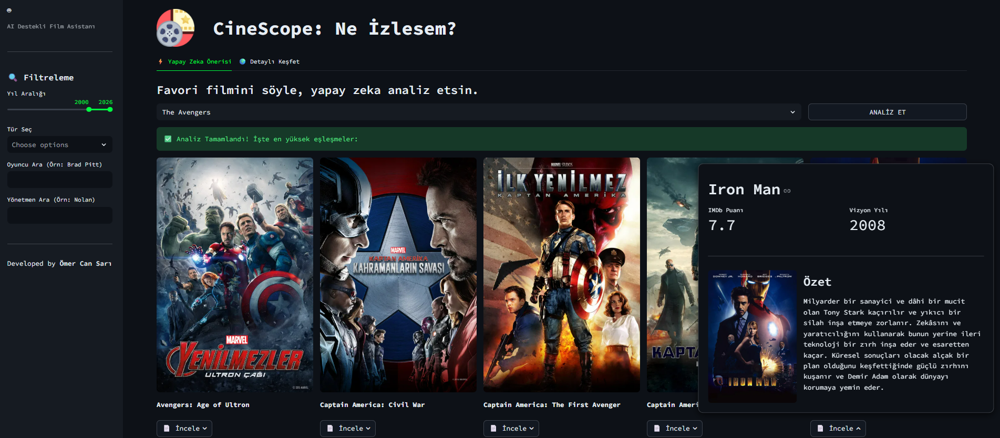
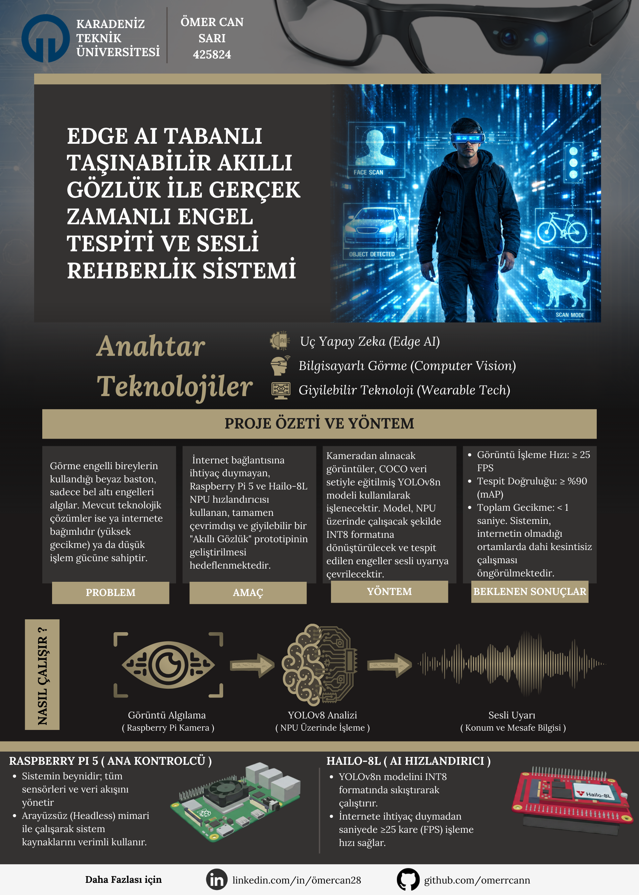

>> ÖNE ÇIKAN PROJELER

CineScope YAPAY ZEKA
Veri bilimi algoritmaları ve Cosine Similarity kullanarak geliştirilmiş, kullanıcının izleme geçmişine dayalı kişiselleştirilmiş film öneri sistemi.

Akıllı Gözlük GÖMÜLÜ SİSTEM / CV
TinyML tabanlı taşınabilir akıllı gözlük ile gerçek zamanlı engel tespiti ve sesli rehberlik sağlayan donanım ve yazılım projesi.